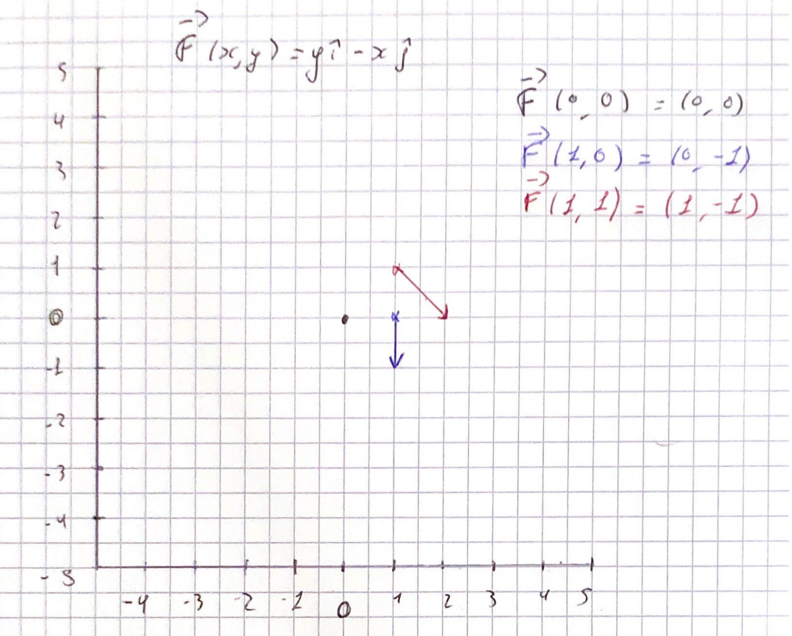
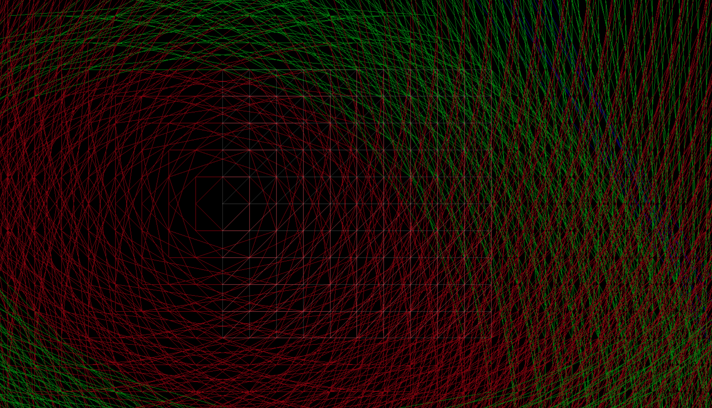
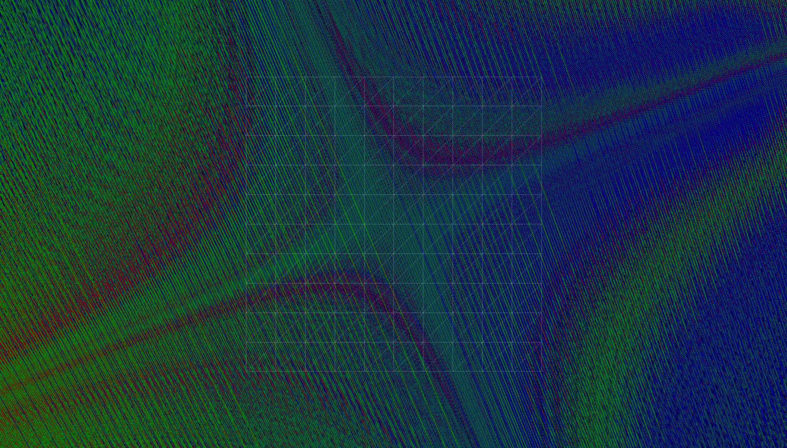

CHPS0941 IHPV REPORT
Interactive volume visualization of vector field
Project made by HOLLARD Lilian
>_ Context
The proposed projects are an extension of the course. Each project is intended to provide an overview of the state of progress on a specific research topic and proposes a set of resources (papers, books, ...) as a starting point.
>_ Project 4 - Interactive volume visualization of vector fieldsVector fields are commonly used in science and engineering to represent physical phenomena such as fluid flow, electromagnetic or acoustic fields, or the behaviour of dynamic systems. One way to understand these phenomena is to generate visual representations of vector fields to reveal their directional information, the position of critical points and their temporal evolution. The objective of this project is to study the implementation of such an algorithm on volumetric data with a possible application on biological spatio-temporal data. In particular, you will be interested in the study of algorithms of the LIC and streamlines type.
>_ Introduction
This project was made using OpenGL/WebGL and mainly using GLSL for the drawings as well as the calculation of the vector fields.
This choice of development method will be explained during the report.
To begin, we will defined and describe how this project can be solved "by hand" to better understand vector / function calculations.
We will then describe the solution chosen to use this method on a computer.
Then we will describe the development methods and algorithms used.
>_ Definition
We can define our vector field as a fonction F : Rn -> Rn with an input domain where every point in space will get you an associate output.
In two dimension, our fonction F is gonna have a two dimensional output.
In other words, our F fonction can be decomposed into two component (where M and N are two function of xy) :
F(x,y) = M(x,y) i + N(x,y) j
>_ Graphing by handTo understand how it works, we can imagine "by hand", for a single value of x and a single value of y, how to draw a vector according to a function F. Imagine M(x,y) and N(x,y) return F = y i - x j, we would then have the following results:
F(0, 0) = (0, 0)F(1, 0) = (-1, 0)
Which translates into drawing by this :

>_ Using a computer
To transmit this method on computer, the choice of the use of GLSL appeared following a programming error. I had initially used Three.js, a 3d development library using WebGL to create a prototype. But I didn't manage the size of the vectors and I couldn't get an algorithm that could simulate different values of x and y in a correct and optimized way to work properly.


The second image makes it possible to better visualize with more density the path traveled by the vectors despite the vector size error.
From this first code prototype, the idea came to me to use shaders to simply visualize any type of values that x and y could have, since the very principle of a shader, more particularly the Fragment Shader is to go through each pixel of the rasterized geometry several times per second thus representing x and y.
>_OpenGL context & GLSL
The WebGL code is a simple code creating a rectangle geometry in an html canvas on which we will draw using a fragment shader.
WebGL js
/*PSEUDO CODE*/
//BUFFER
gl.createBuffer();
gl.bindBuffer();
//Creation du rectangle
gl.bufferData(gl.ARRAY_BUFFER, new Float32Array([
x1, y1,
x2, y1,
x1, y2,
x1, y2,
x2, y1,
x2, y2,
]), gl.STATIC_DRAW);
//VAO
VAO = gl.createVertexArray();
gl.bindVertexArray(VAO);
gl.vertexAttribPointer(...);
//Uniform value for vertex & fragment shaders
gl.uniform2f(...);
//Draw
gl.drawArrays(...);
Ressources:
Learn OpenGL, extensive tutorial resource for learning Modern OpenGL. https://learnopengl.com/.WebGL2 Fundamentals. https://webgl2fundamentals.org.
Fragment Shader
The fragment shader is mainly composed of 2 functions, one allowing the drawing of an arrow inspired by 2 tutorials found on the net (source at the end of the chapter) as well as a function corresponding to the vector fields
Description of the shader: First, we call a function returning a float value from 2 parameters: The x,y coordinates of gl_FragCoord as well as the vector field, represented by a 2-dimensional vector. This second parameter is calculated according to the chosen density as well as the central pixel of the tile corresponding to the current position x, y. As a result, we will obtain arrows/vectors centered on a single point for a certain value of x,y and with a size corresponding to the tile.
Once the distance of the vector has been calculated since it varies over time thanks to a uniform Time variable, we can draw the vector via the fragment shader as well as the background value thanks to the clamp functions (to keep the arrow at inside the tile) and mix (to mix the color of the arrow corresponding to the drawing of the arrow and the screen background).
>_ How to draw lines in WebGL : https://www.khronos.org/assets/uploads/developers/presentations/Crazy_Panda_How_to_draw_lines_in_WebGL.pdf>_ Arrow chapter :
(starting page 25) https://jcgt.org/published/0003/04/01/paper.pdf
>_ Draw "by hand" example with a computer
Function : F = 1 i , 0 j
We can observe that the shader draws for each rasterized pixel of the geometry using the decided function for the vector field. Each "tile" is respected so that the vectors do not overlap.
>_ More example
F = cos(x * 0.01 + y * 0.01 + time), sin(y * 0.01 * cos(x *0.01 + time))